User’s Guide¶
Introduction¶
Features¶
Walkthrough¶
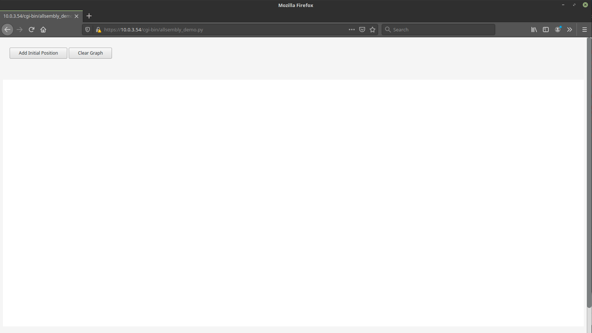Click the button “Add Initial Position” to get started.
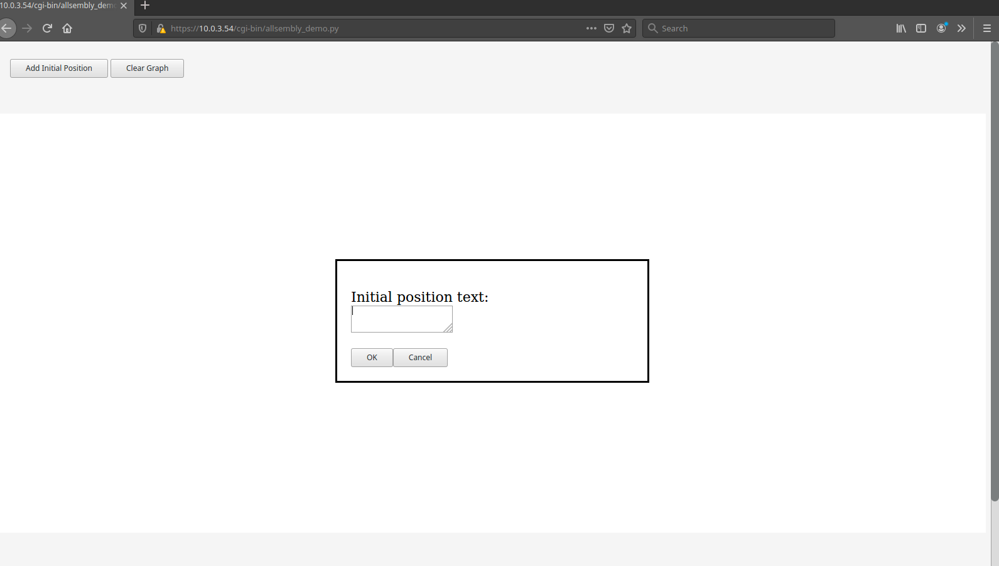An initial position is a position that is being taken, which is expected to be the conclusion under consideration. Enter the text of the position being taken, then press “OK”.
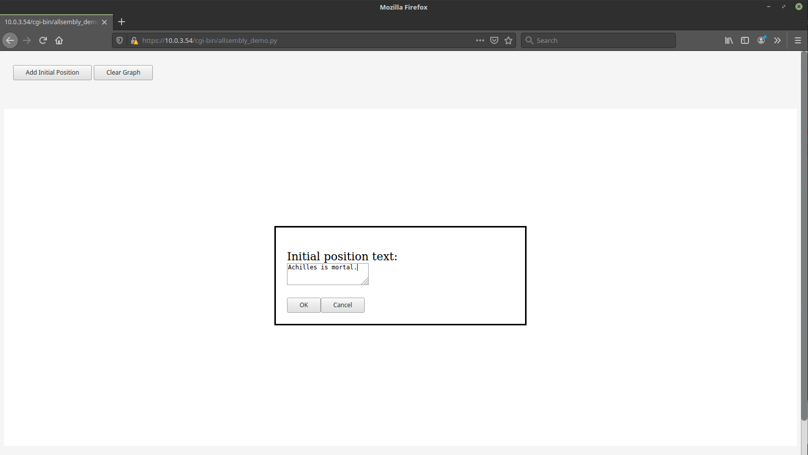 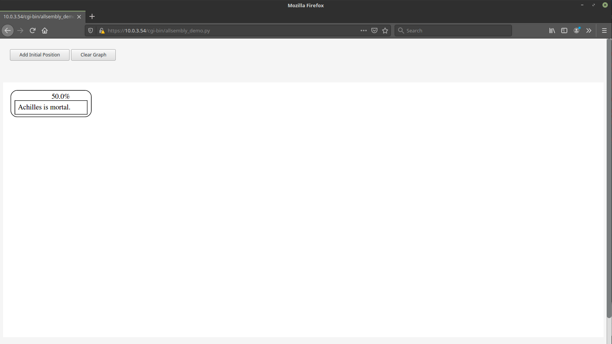The position appears in the diagram. It is annotated above with 50.0% because there is no information pro or con to influence the estimate of the probability of the position being true or correct. Fifty percent means indifference between true and false, correct and incorrect.
The diagram may be moved around by clicking and dragging it with the mouse and zooming in and out may be accomplished with a mouse scroll wheel. Additional controls for panning and zooming are intended for a future version. Currently, the panning is a bit buggy. If the diagram disappears from view, you can get it back by loading the page again. Just press enter in the location line after the URL.
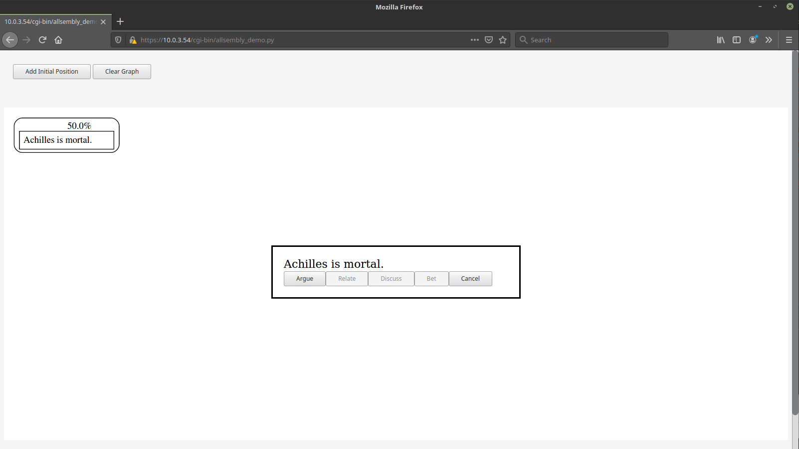Clicking on a position opens the position detail dialog box. Currently this only contains the full text of the position and buttons showing the actions that may be taken with respect to the position. The only action available in this version is “Argue”, which means to present a pro or con consideration or piece of evidence supporting or opposing the position.
The greyed out buttons are actions that will be available in future revisions of the software. “Define” means to clear up the meanings of terms in the position. “Discuss” means to start or add to an informal discussion about the position. Discussions are expected to be useful for coming up with good arguments or good definitions of terms. “Bet” means to place a bet on whether the weight of evidence will support the position in the end (pro considerations outweight con considerations). “Relate” means to propose that the positon is related to some other position by being either the same as the other position or mutually exclusive with it. This will enable the computer to model dependencies between positions so as not to over or under count their weights in the probability estimate.
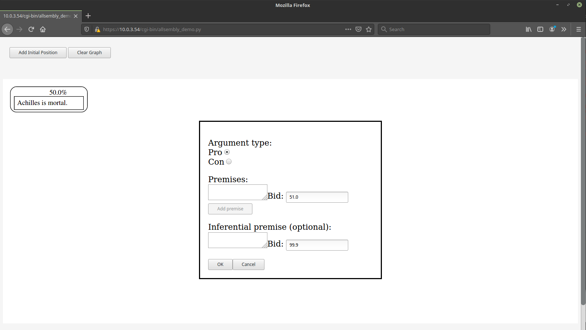Pressing the “Argue” button opens the argue dialog box. Premises are the reasons or evidence you are contributing that supports or opposes the position. It is supposed to support the position when the selected “Argument type” is “Pro” and to oppose the position when the selected “Argument type” is “Con”. Premises are themselves new positions. When adding a premise, it is mandatory to give one’s estimate of the probability of the truth or correctness of the premise in the form of a bid. A bid is an offer to buy a betting contract. In a future version of this software, bid orders will be filled when there is a corresponding order pending at or below your bid price.
Currently, there is no interaction with other users in the software. The system will accept whatever bid you put in. So you can simulate the case of a position stabilizing at a particular price.
After filling the fields, click “OK” to add your pro or con position to the diagram.
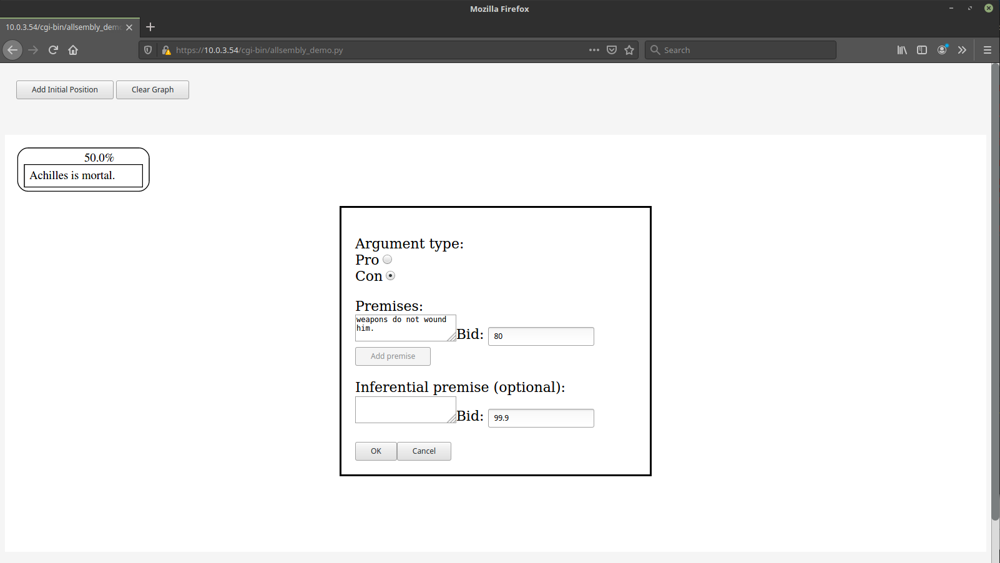 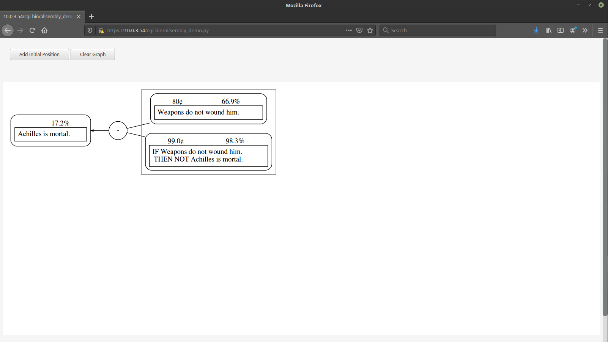The computer updates the probability estimates based on the prices of the positions pro and con. Since a “con” position was added, there is only evidence against the position that “Achilles is mortal”, namely that “Weapons do not wound him.” Prices are between 0 and 100 “cents”. A high price like 80 “cents” indicates high confidence in a position among those who have bid. High confidence in a “con” position lowers the probability of the position it opposes.
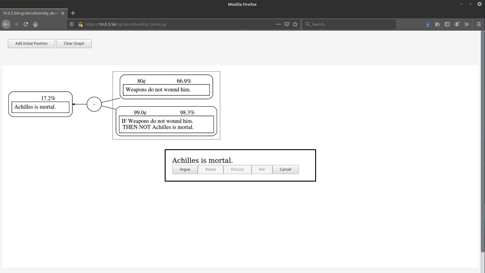A new pro or con consideration may be added by clicking on the position again.
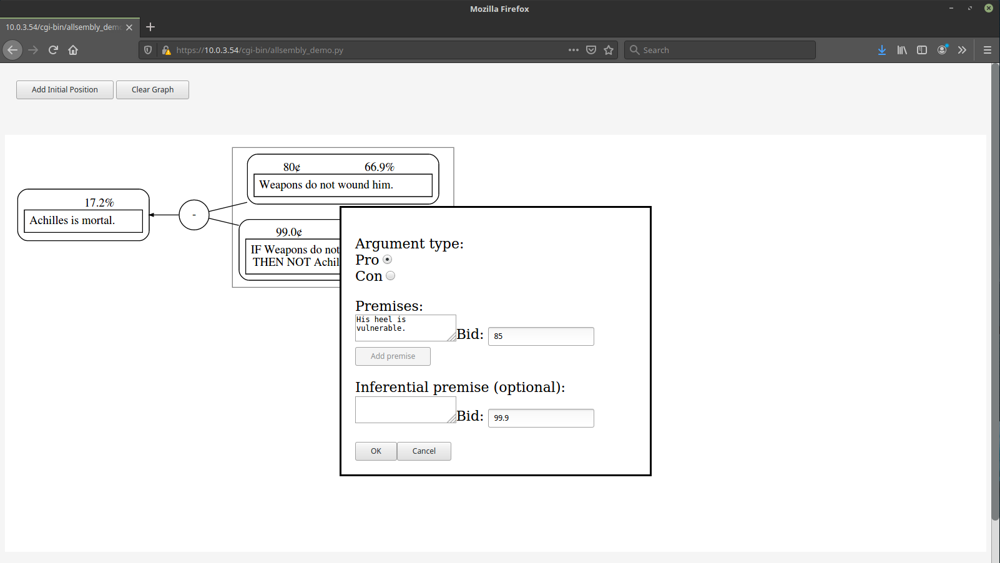 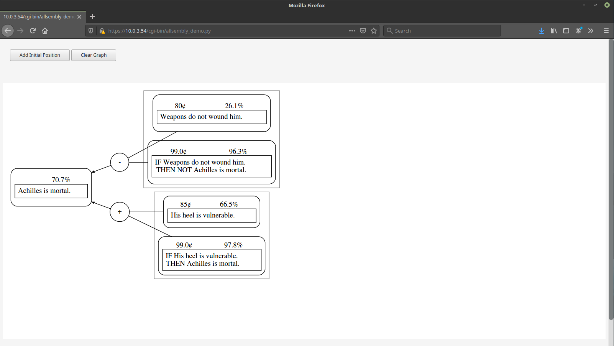A “pro” consideration has been added and the probability estimate is updated by the computer software. There is greater confidence in the “pro” consideration than in the “con” consideration.
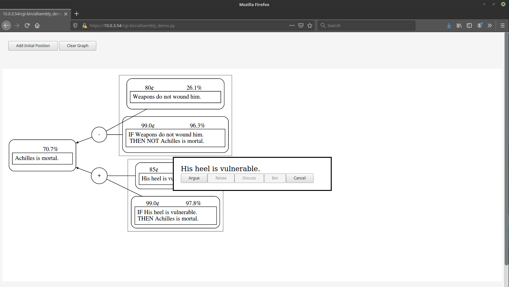In this step, we click on the position “His heel is vulnerable”, which we will shore up with “pro” evidence.
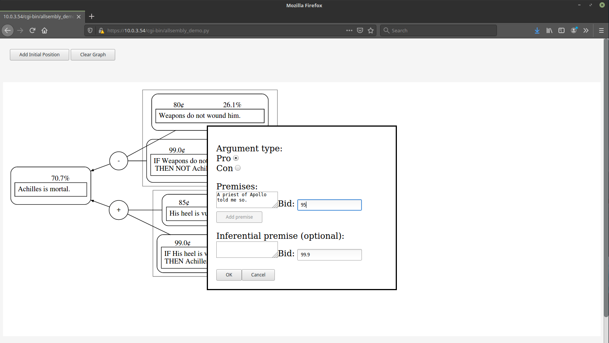 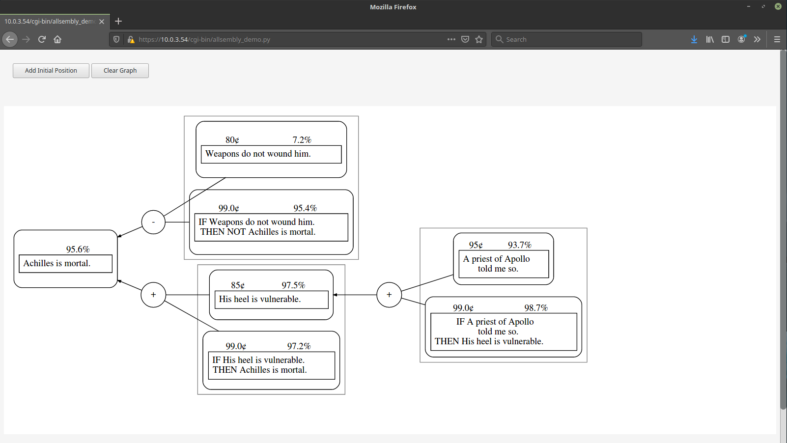We have the word of a reliable source according to the new “pro” evidence. There is high confidence in that new position (95 “cents”). The probability evidence of the position it supports, “His heel is vulnerable”, has increased and so has the probability estimate of the position supported by that position (i.e., the initial position) that “Achilles is mortal”.
Future features¶
Decision features¶
The purpose of the software is decision support, but no features for specifically evaluating action or policy options have been added, yet. Currently, the initial positions are not necessarily of the form: we should do x (i.e., it would be in the common good to do x).
This section will be updated to include some information about what the action or policy option evaluation features may look like and how they might work.